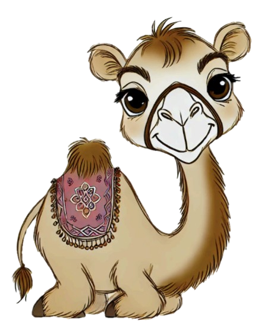

Performance comparison of different closed-and open-source LMMs on  CAMEL-Bench.
| # | Model | Source | ALL | MM Understand. & Reasoning | OCR & Document Understanding | Charts & Diagrams Understanding | Video Understanding | Cultural Specific Understanding | Medical Imaging | Agro Specific | Remote Sensing |
| 1 | GPT-4o 🥇 | Link | 62.40 | 57.90 | 59.11 | 73.57 | 74.27 | 80.86 | 49.90 | 80.75 | 22.85 | 2 | GPT-4o-mini 🥈 | Link | 54.54 | 48.82 | 42.89 | 64.98 | 68.11 | 65.92 | 47.37 | 79.58 | 16.93 |
| 3 | Qwen2-VL-7B 🥉 | Link | 54.45 | 51.35 | 49.06 | 55.39 | 62.64 | 75.64 | 39.42 | 79.84 | 22.28 |
| 4 | Gemini-1.5-Pro | Link | 52.38 | 46.67 | 36.59 | 47.06 | 42.94 | 56.24 | 33.77 | 72.12 | 17.07 |
| 5 | Gemini-1.5-Flash | Link | 45.14 | 45.58 | 33.59 | 48.25 | 53.31 | 46.54 | 42.86 | 76.06 | 14.95 |
| 6 | Maya-7B | Link | 41.80 | 39.07 | 26.70 | 34.25 | 47.23 | 57.42 | 31.57 | 70.61 | 27.53 |
| 7 | LLaVa-OneVision-7B | Link | 40.45 | 42.90 | 31.35 | 40.86 | 29.41 | 66.02 | 27.29 | 75.03 | 10.72 |
| 8 | Pangea-7B-Instruct | Link | 34.90 | 40.09 | 17.75 | 38.75 | 49.01 | 20.34 | 31.99 | 74.51 | 6.67 |
| 9 | Qwen2-VL-2B | Link | 32.62 | 40.59 | 25.68 | 27.83 | 38.90 | 34.27 | 29.12 | 52.02 | 12.56 |
| 10 | InternVL2-8B | Link | 30.26 | 30.41 | 15.91 | 30.27 | 51.42 | 20.88 | 29.48 | 44.47 | 5.36 |
| 11 | LLaVa-NeXt-7B | Link | 27.38 | 26.33 | 19.12 | 27.56 | 44.90 | 28.30 | 22.54 | 42.00 | 8.33 |